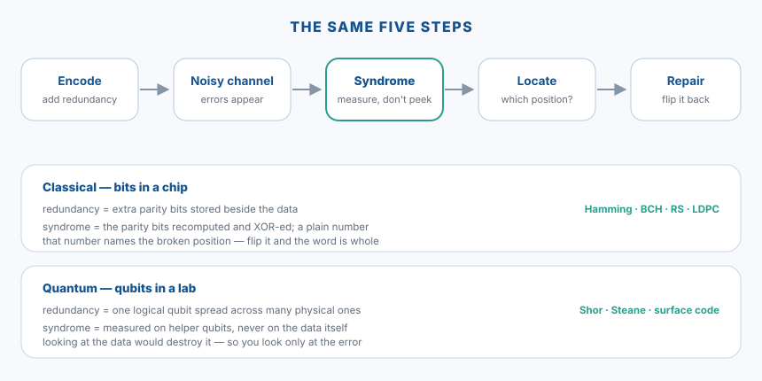

Từ mã sửa lỗi lượng tử đến ECC trong con chipFrom quantum error correction to ECC inside a chip
Luận án tiến sĩ của tôi là về mã sửa lỗi cho xử lý thông tin lượng tử. Bây giờ tôi viết RTL cho những con chip rất đời thường. Có người hỏi hai việc ấy liên quan gì đến nhau — và thú thật là lúc mới chuyển sang làm chip, chính tôi cũng chưa trả lời được. Bài này là câu trả lời tôi gom lại được sau mấy năm, viết lại từ một bài giảng tôi soạn cho sinh viên.
My doctoral work was on error-correcting codes for quantum information processing. These days I write RTL for very ordinary chips. People ask what the two have to do with each other — and honestly, when I first moved into chip design I could not have answered either. This is the answer I have gathered over a few years, rewritten from a lecture I prepared for students.
1. Mã sửa lỗi lượng tử, kể thật ngắn1. Quantum error correction, told very briefly
Một qubit rất dễ hỏng. Nó mất trạng thái chỉ vì một chút nhiễu nhiệt, một dao động điện từ, hay đơn giản là thời gian trôi qua. Nếu là bit thường, ta xử lý chuyện đó rất thô sơ: chép thành ba bản, lúc đọc thì lấy theo đa số. Với qubit, cách ấy không dùng được, vì hai lý do:
A qubit is fragile. It loses its state from a little thermal noise, an electromagnetic wobble, or simply the passing of time. With an ordinary bit we handle that crudely: keep three copies and take the majority at read time. With a qubit that trick fails, for two reasons:
- Không sao chép được. Có một định lý nói rằng không tồn tại phép sao chép một trạng thái lượng tử chưa biết. Vậy là không có "ba bản" nào cả.
- Nhìn vào là hỏng. Đo một qubit sẽ làm nó sụp về một giá trị cụ thể — đúng cái thông tin ta đang muốn giữ thì bị phá mất khi ta kiểm tra.
- You cannot copy it. A theorem says no machine can duplicate an unknown quantum state. So there are no "three copies" to be had.
- Looking destroys it. Measuring a qubit collapses it to a definite value — the very information you are trying to protect is ruined by the act of checking.
Cách đi vòng, do Peter Shor đề xuất năm 1995 và sau đó thành cả một ngành, là: trải một qubit mang thông tin lên nhiều qubit vật lý, rồi thay vì đo dữ liệu, ta đo một nhóm qubit phụ. Kết quả đo ấy — gọi là hội chứng — cho biết đã có lỗi gì, ở đâu, mà không hề tiết lộ dữ liệu. Biết lỗi rồi thì sửa.
The way around it, proposed by Peter Shor in 1995 and since grown into a field of its own, is this: spread one qubit of information across many physical qubits, and instead of measuring the data, measure a set of helper qubits. That measurement — called the syndrome — tells you what went wrong and where without revealing the data at all. Once you know the error, you undo it.
Tôi làm phần lý thuyết mã, không phải phần chế tạo máy — nên ở đây tôi chỉ dám kể đến mức ý tưởng.
I worked on the coding theory, not on building the machines — so I will keep this at the level of the idea.
2. Điều làm tôi ngạc nhiên khi chuyển sang làm chip2. What surprised me when I moved to chips
Khi bắt đầu đọc các mã sửa lỗi dùng trong bộ nhớ và đường truyền, tôi nhận ra mình đang đọc lại đúng cái khung đã quen — chỉ là viết bằng một thứ ngôn ngữ khác, rẻ hơn hàng triệu lần:
When I started reading the codes used in memories and links, I realised I was reading the same skeleton I already knew — written in a different language, and a million times cheaper:

Chữ hội chứng chính là chiếc cầu. Ở chip, hội chứng chỉ là mấy bit kiểm được tính lại rồi XOR với bit đã lưu — một con số nhỏ xíu. Ở máy lượng tử, nó là kết quả đo trên các qubit phụ. Hai thứ không giống nhau chút nào về vật lý, nhưng đóng đúng một vai: nói cho ta biết về lỗi mà không bắt ta phải nhìn vào dữ liệu.
The word syndrome is the bridge. In a chip it is just a few parity bits recomputed and XOR-ed against the stored ones — a tiny number. In a quantum machine it is the outcome of measuring helper qubits. Physically they have nothing in common, yet they play exactly one role: to tell you about the error without making you look at the data.
3. Trong chip, kênh nào cũng nhiễu3. Inside a chip, every channel is noisy
Một hệ truyền tin, dù là sợi dây hay ô nhớ, đều có chung một hình: nguồn sinh ra k bit; bộ mã hoá thêm vào phần dư thừa thành n bit; n bit ấy đi qua một môi trường có nhiễu; đầu kia giải mã và trả lại k bit — hy vọng là đúng. Tỉ số R = k/n gọi là tỉ lệ mã: phần bit thật sự mang tin.
A communication system, whether a wire or a memory cell, always has the same shape: a source produces k bits; an encoder adds redundancy to make n; those n bits cross a noisy medium; the far end decodes and returns k bits — hopefully the right ones. The ratio R = k/n is the code rate: the fraction of bits that actually carry information.
Năm 1948, Claude Shannon chứng minh một điều đáng kinh ngạc: với mọi tỉ lệ mã thấp hơn một ngưỡng gọi là dung lượng kênh, tồn tại một mã đưa xác suất lỗi về gần không khi khối tin đủ dài. Ông không chỉ ra mã đó là mã nào — gần tám mươi năm qua, phần lớn ngành mã hoá là đi tìm những mã vừa tiến gần ngưỡng ấy vừa thực thi được bằng mạch thật.
In 1948 Claude Shannon proved something remarkable: for every code rate below a threshold called the channel capacity, a code exists whose error probability goes to nearly zero as the block grows long. He did not say which code — and for nearly eighty years since, much of coding theory has been the search for codes that both approach that limit and can be built in real circuits.
Trong một con chip, "nhiễu" rất cụ thể: hạt vũ trụ bắn trúng ô nhớ làm lật một bit; điện tích rò rỉ dần trong ô flash; xuyên âm giữa các dây tín hiệu chạy nhanh. Và cái giá của việc sửa lỗi cũng rất cụ thể: diện tích, độ trễ và điện năng của bộ mã hoá, bộ giải mã.
Inside a chip the "noise" is very concrete: a cosmic particle striking a memory cell and flipping a bit; charge leaking out of a flash cell over years; crosstalk between fast neighbouring wires. And the cost of fixing it is equally concrete: the area, latency and power of the encoder and the decoder.
4. Khái niệm gốc: khoảng cách Hamming4. The root idea: Hamming distance
Một mã khối (n, k) biến k bit tin thành từ mã n bit. Điều quan trọng: trong 2ⁿ mẫu bit có thể có, chỉ 2ᵏ mẫu là từ mã hợp lệ. Phần còn lại là "vùng cấm" — nhận được một mẫu nằm trong vùng cấm nghĩa là chắc chắn có lỗi.
An (n, k) block code turns k information bits into an n-bit codeword. The key point: of the 2ⁿ possible bit patterns, only 2ᵏ are valid codewords. The rest is forbidden ground — receiving a pattern there means an error for certain.
Khoảng cách Hamming giữa hai chuỗi là số vị trí chúng khác nhau. Giá trị nhỏ nhất giữa hai từ mã bất kỳ, gọi là dmin, quyết định toàn bộ sức mạnh của mã. Nếu các từ mã cách nhau xa, một vài bit lỗi vẫn chưa đủ đẩy chuỗi nhận được sang gần một từ mã khác — và ta chỉ việc chọn từ mã gần nhất.
Hamming distance between two strings is the number of positions where they differ. The smallest distance between any two codewords, written dmin, decides everything the code can do. If codewords sit far apart, a few flipped bits still leave the received word closest to the original — and we simply pick the nearest codeword.
| dmin | Phát hiệnDetects | SửaCorrects | Ví dụExample |
|---|---|---|---|
| 2 | 1 | 0 | Parity |
| 3 | 2 | 1 | Hamming |
| 4 | 3 | 1 (và phát hiện 2)1 (and detects 2) | SECDED |
| 2t + 1 | 2t | t | BCH, Reed–Solomon |
Nói gọn: phát hiện được tới dmin − 1 lỗi, sửa được tới phần nguyên của (dmin − 1)/2. Toàn bộ phần còn lại của bài chỉ là những cách khác nhau để đẩy dmin lên cao mà trả giá ít nhất.
In short: you can detect up to dmin − 1 errors and correct up to the whole part of (dmin − 1)/2. Everything that follows is just different ways of pushing dmin up while paying as little as possible.
5. Bậc thang trong thực tế5. The ladder, in practice
| MãCode | Làm được gìWhat it does | Thường gặp ởWhere you meet it | Giá phần cứngHardware cost |
|---|---|---|---|
| Parity | phát hiện số lẻ bit lỗidetects an odd number of errors | UART, thẻ nhãn cacheUART, cache tags | một cây XORone XOR tree |
| Checksum / CRC | phát hiện; CRC bắt mọi chuỗi lỗi liên tiếp ngắndetects; CRC catches every short burst | Ethernet, USB, PCIeEthernet, USB, PCIe | bộ cộng hoặc thanh ghi dịchan adder or a shift register |
| Hamming / SECDED | sửa 1 bit, phát hiện 2 bitfixes one bit, detects two | SRAM, DRAM, đường truyềnSRAM, DRAM, links | cây XOR, một chu kỳXOR trees, one cycle |
| BCH | sửa t bit lỗi rải rácfixes t scattered bit errors | flash NOR/NAND, khoá PUFNOR/NAND flash, PUF keys | hội chứng + giải phương trình + dò nghiệmsyndrome + key equation + root search |
| Reed–Solomon | sửa t ký hiệu, tức là lỗi cụmfixes t symbols, i.e. bursts | mã QR, CD/DVD, băng từQR codes, CD/DVD, tape | số học trên trường hữu hạnfinite-field arithmetic |
| LDPC | tiến gần giới hạn Shannon, dùng tin mềmnear the Shannon limit, uses soft information | dữ liệu 5G, ổ SSD, Wi-Fi5G data, SSDs, Wi-Fi | lặp nhiều vòng, tốn bộ nhớmany iterations, lots of memory |
| Polar | chứng minh được là đạt dung lượng kênhprovably achieves capacity | kênh điều khiển 5G5G control channels | bộ giải mã tuần tựa sequential decoder |
6. Một ví dụ tự tính được bằng tay6. An example you can work out by hand
Mã Hamming (12, 8) bảo vệ 8 bit dữ liệu bằng 4 bit kiểm. Vì sao đúng 4? Vì hội chứng phải đủ chỗ để gọi tên mọi vị trí lỗi và cả trường hợp "không lỗi": cần 2ʳ ≥ k + r + 1. Với k = 8: r = 3 cho 8 < 12 nên không đủ; r = 4 cho 16 ≥ 13 nên vừa đủ.
The Hamming (12, 8) code protects 8 data bits with 4 check bits. Why exactly four? Because the syndrome must have room to name every error position and the "no error" case too: you need 2ʳ ≥ k + r + 1. For k = 8: r = 3 gives 8 < 12, not enough; r = 4 gives 16 ≥ 13, just enough.
Mẹo đẹp nhất của mã này: đặt các bit kiểm ở vị trí 1, 2, 4, 8 — các luỹ thừa của 2 — và cho bit kiểm thứ i phụ trách mọi vị trí có bit thứ i bằng 1 trong chỉ số nhị phân. Khi đó hội chứng đọc ra chính là số thứ tự của vị trí hỏng:
The prettiest trick in this code: put the check bits at positions 1, 2, 4 and 8 — the powers of two — and let check bit i cover every position whose index has bit i set. The syndrome then reads out as the number of the broken position itself:
Thử ngay: mã Hamming — hội chứng chỉ thẳng vào ô hỏngTry it: a Hamming code — the syndrome points straight at the broken cell
Trình mô phỏng mở sẵn đúng ví dụ tính tay: dữ liệu 0 1 0 0 1 1 1 1, bit số 5 bị lật. Bấm ô dữ liệu để đổi bit, bấm ô của từ nhận được để gây lỗi hay gỡ lỗi. Bảng ở bước 4 là ma trận kiểm: mỗi hàng là một phép kiểm chẵn lẻ, mỗi cột là một vị trí, ô tô xanh là vị trí phép kiểm ấy phụ trách. Cột của ô hỏng có đúng hình dạng các hàng báo ✗ — vì thế hội chứng đọc ra chính là số thứ tự của ô ấy.The simulator opens on the hand example: data 0 1 0 0 1 1 1 1, bit 5 flipped. Click a data cell to change a bit, click a cell of the received word to inject or remove an error. The table in step 4 is the parity-check matrix: each row is one parity check, each column one position, and the blue cells are the positions that check covers. The broken cell's column has exactly the shape of the rows marked ✗ — which is why the syndrome reads out as that cell's number.
Trình mô phỏng cần JavaScript.
The simulator needs JavaScript.
1Chọn mã, rồi đặt dữ liệuPick a code, then set the data
2Mã hoá: bit kiểm ở các vị trí 1, 2, 4, 8Encode: check bits at positions 1, 2, 4, 8
3Kênh nhiễu: bấm vào một ô để lật bitNoisy channel: click a cell to flip it
4Giải mã: tính lại từng phép kiểm trên từ nhậnDecode: redo every check on the received word
Dấu phẩy trên phân biệt phép kiểm với bit kiểm: C1′ là XOR của chính ô C1 với mọi ô nó phụ trách, tính trên từ nhận được — bằng 0 khi phép kiểm đúng, bằng 1 khi có lỗi trong vùng nó trông.The prime tells a check from a check bit: C1′ is the XOR of cell C1 itself and every cell it covers, computed on the received word — 0 when the check passes, 1 when an error sits in its area.
Cả ba mã × mọi giá trị dữ liệu × mọi mẫu lỗi tới 2 bit: từ có ≤ 1 lỗi phải trở về đúng dữ liệu, từ có 2 lỗi ở ô a và b phải cho đúng S = a ⊕ b. Chạy ngay trong máy bạn.All three codes × every data value × every error pattern of up to 2 bits: a word with ≤ 1 error must come back as the right data, a word with 2 errors at cells a and b must give exactly S = a ⊕ b. Runs on your machine.
Bấm "Đúng 2 bit" ở trên để thấy vì sao còn thiếu một thứ: với hai lỗi ở ô a và b, hội chứng là a ⊕ b, và bộ giải mã lật nhầm một ô lành. Thêm một bit kiểm chẵn lẻ trên toàn bộ 12 bit thì dmin lên 4, và ta được SECDED: sửa được một lỗi, phát hiện được hai lỗi mà không sửa bừa. Đây chính là lý do các thanh RAM máy chủ có ECC thường là 64 bit dữ liệu + 8 bit kiểm = 72 bit.
Press "Exactly 2 bits" above to see what is still missing: with errors at cells a and b the syndrome is a ⊕ b, and the decoder flips a healthy cell. Add one more parity bit over all 12 and dmin rises to 4, giving SECDED: correct one error, detect two without mis-correcting. This is why ECC server memory usually comes as 64 data bits + 8 check bits = 72.
Thử ngay: mã SECDED (13, 8) trong trình duyệtTry it: the (13, 8) SECDED code in your browser
Cùng cách xếp như ví dụ trên: bit kiểm C1, C2, C4, C8 ở vị trí 1, 2, 4, 8; tám bit dữ liệu D0..D7 ở các vị trí còn lại; thêm bit P ở vị trí 0 là chẵn lẻ của cả 12 bit. Bấm vào ô dữ liệu để đổi bit, rồi bấm vào các ô của từ nhận được để gây lỗi và xem bộ giải mã nói gì — và nói có đúng không.Same layout as the example above: check bits C1, C2, C4, C8 at positions 1, 2, 4, 8; the eight data bits D0..D7 in the remaining positions; plus a bit P at position 0, the parity of all 12. Click a data cell to change a bit, then click cells of the received word to inject errors and watch what the decoder says — and whether it is right.
Trình mô phỏng cần JavaScript.
The simulator needs JavaScript.
1Dữ liệu 8 bit — bấm để đổi8 data bits — click to change
2Mã hoá: từ mã 13 bitEncode: the 13-bit codeword
3Kênh nhiễu: bấm vào một ô để lật bitNoisy channel: click a cell to flip it
4Giải mãDecode
Mọi giá trị dữ liệu (256) nhân mọi mẫu lỗi tới 2 bit (1 + 13 + 78): từ có ≤ 1 lỗi phải trở về đúng dữ liệu, từ có 2 lỗi phải bị phát hiện mà không sửa. Chạy ngay trong máy bạn, mất chưa tới một giây.Every data value (256) times every error pattern of up to 2 bits (1 + 13 + 78): a word with ≤ 1 error must come back as the right data, a 2-error word must be flagged and left alone. Runs on your machine in under a second.
7. Khi cần sửa nhiều bit: BCH và Reed–Solomon7. When more bits must be fixed: BCH and Reed–Solomon
Muốn sửa nhiều hơn một bit, ta phải rời khỏi số học nhị phân thông thường và bước vào trường hữu hạn — một tập hữu hạn phần tử mà vẫn cộng, trừ, nhân, chia được bình thường. Trong các trường GF(2m) dùng cho mã nhị phân, phép cộng chính là XOR, còn phép nhân thành phép cộng số mũ. Nhờ có phép chia, ta giải được ra vị trí lỗi thay vì phải dò từng bit.
To fix more than one bit you must leave ordinary binary arithmetic and step into a finite field — a finite set of elements where you can still add, subtract, multiply and divide. In the GF(2m) fields used for binary codes, addition is simply XOR and multiplication becomes addition of exponents. Because division exists, you can solve for the error positions instead of searching bit by bit.
Mã BCH (đặt theo tên Bose, Ray-Chaudhuri và Hocquenghem, cuối những năm 1950) được dựng sao cho đa thức sinh có 2t nghiệm liên tiếp trong trường ấy, và điều đó bảo đảm dmin ≥ 2t + 1 — tức là sửa được t bit. Trình mô phỏng dưới đây dựng đúng mã ấy với n = 15 và để bạn chọn t:
A BCH code (named after Bose, Ray-Chaudhuri and Hocquenghem, late 1950s) is built so that its generator polynomial has 2t consecutive roots in that field, which guarantees dmin ≥ 2t + 1 — that is, it corrects t bits. The simulator below builds exactly such a code with n = 15 and lets you choose t:
Thử ngay: mã BCH (15, k) sửa t bitTry it: a BCH (15, k) code that fixes t bits
Trường hữu hạn ở đây là GF(16), sinh bởi x⁴ + x + 1: mười sáu phần tử, mỗi phần tử là 4 bit, cộng bằng XOR (bảng ở bước 4). Chọn t, bấm ô để đổi dữ liệu và gây lỗi. Bộ giải mã đi đúng ba khâu như phần cứng — tính hội chứng, giải phương trình khoá, dò nghiệm — và bước 5 đếm trên mọi mẫu lỗi xem chuyện gì xảy ra khi vượt quá t.The finite field here is GF(16), generated by x⁴ + x + 1: sixteen elements, each one 4 bits, added by XOR (table in step 4). Pick t, click cells to change the data and inject errors. The decoder runs the same three stages as the hardware — syndromes, key equation, root search — and step 5 counts, over every error pattern, what happens once you go past t.
Trình mô phỏng cần JavaScript.
The simulator needs JavaScript.
1Chọn t — sửa được bao nhiêu bitPick t — how many bits it fixes
2Dữ liệu k bit — bấm để đổi — và từ mã 15 bitk data bits — click to change — and the 15-bit codeword
Ô số i là hệ số của xⁱ. Mã hoá hệ thống: dữ liệu nằm nguyên ở các ô cao, còn các ô C là phần dư khi chia xn−k·d(x) cho g(x) — nhờ vậy c(x) chia hết cho g(x).Cell i is the coefficient of xⁱ. Systematic encoding: the data sits unchanged in the high cells, and the C cells are the remainder of xn−k·d(x) divided by g(x) — which makes c(x) divisible by g(x).
3Kênh nhiễu: bấm vào một ô để lật bitNoisy channel: click a cell to flip it
4Giải mã: ba khâu của phần cứngDecode: the three hardware stages
Với mã nhị phân luôn có S₂ = S₁², S₄ = S₂²… nên phần cứng chỉ cần tính các S lẻ.For a binary code S₂ = S₁², S₄ = S₂²… always hold, so hardware only needs the odd S.
Λ(x) được dựng sao cho nó bằng 0 tại x = α−i với đúng các ô lỗi i; bậc của nó là số lỗi mà bộ giải mã đoán.Λ(x) is built to vanish at x = α−i exactly for the broken cells i; its degree is the number of errors the decoder guesses.
Bảng GF(16): αⁱ viết thành 4 bit (α³ α² α¹ α⁰)The GF(16) table: αⁱ as 4 bits (α³ α² α¹ α⁰)
Cộng là XOR từng bit; nhân là cộng số mũ rồi lấy dư cho 15 — ví dụ α⁷ · α¹² = α¹⁹ = α⁴.Addition is a bitwise XOR; multiplication adds the exponents modulo 15 — e.g. α⁷ · α¹² = α¹⁹ = α⁴.
5Vách đá: đếm trên mọi mẫu lỗiThe cliff: counted over every error pattern
Mã tuyến tính và bộ giải mã chỉ nhìn hội chứng, nên kết quả chỉ phụ thuộc mẫu lỗi chứ không phụ thuộc dữ liệu: 2¹⁵ = 32 768 mẫu là đủ mọi trường hợp. "Bỏ lọt" là khi chính mẫu lỗi là một từ mã: mọi hội chứng bằng 0 và bộ giải mã nói "không lỗi". Hàng tô đậm là số bit đang lật ở bước 3.The code is linear and the decoder only looks at syndromes, so the outcome depends on the error pattern, not on the data: 2¹⁵ = 32 768 patterns cover every case. "Missed" means the error pattern is itself a codeword: every syndrome is 0 and the decoder says "no error". The highlighted row is the number of bits flipped in step 3.
Cả ba giá trị t × mọi dữ liệu × mọi mẫu lỗi tới t bit: phải trở về đúng từ mã, đúng các ô lỗi.All three values of t × every data value × every error pattern of up to t bits: each must return to its codeword, at the right cells.
Đổi t ở bước 1 là thấy cái giá: từ t = 1 lên 2 tốn thêm 4 bit kiểm, từ 2 lên 3 thêm 2 bit nữa (vì m₅(x) chỉ bậc 2), và tỉ lệ mã tụt từ 0,73 xuống 0,47 rồi 0,33. Với trường GF(2m), mỗi bit sửa thêm tốn tới m bit kiểm. Không có bữa trưa miễn phí.
Change t in step 1 and the price shows: going from t = 1 to 2 costs 4 more check bits, from 2 to 3 another 2 (because m₅(x) has degree 2 only), and the code rate falls from 0.73 to 0.47 and then 0.33. Over GF(2m), each extra bit of correction costs up to m check bits. There is no free lunch.
Reed–Solomon là phiên bản làm việc trên ký hiệu thay vì bit: mỗi ký hiệu là một nhóm m bit. Một chuỗi lỗi liên tiếp nằm gọn trong một ký hiệu thì chỉ tính là một lỗi — nên nó rất hợp với vết xước trên đĩa CD, vết bẩn trên mã QR, hay lỗi cụm trên băng từ.
Reed–Solomon is the version that works on symbols rather than bits: each symbol is a group of m bits. A burst of errors that falls inside one symbol counts as only one error — which makes it a natural fit for a scratch on a CD, dirt on a QR code, or burst damage on tape.
8. Chỗ mã sửa lỗi gặp bảo mật: PUF8. Where ECC meets security: PUF
Đây là ứng dụng tôi thấy thú vị nhất. PUF (physically unclonable function) là cách lấy một "dấu vân tay" từ chính sai số chế tạo của con chip: hai con chip giống hệt nhau trên bản vẽ vẫn khác nhau ở mức nanomet, và sự khác biệt ấy đọc ra được thành bit. Cái hay là khoá không được lưu ở đâu cả — nó được dựng lại từ vật liệu mỗi khi cần.
This is the application I find most interesting. A PUF (physically unclonable function) takes a "fingerprint" from the chip's own manufacturing variation: two chips identical on the drawing still differ at the nanometre scale, and that difference can be read out as bits. The beauty is that the key is never stored anywhere — it is rebuilt from the silicon whenever it is needed.
Nhưng có một chỗ vướng: dấu vân tay ấy hơi khác nhau mỗi lần đọc. Một phần nhỏ số ô không ổn định, và con số đó tăng lên khi nhiệt độ chạy từ rất lạnh tới rất nóng. Với việc nhận dạng thì vài bit sai không sao — ta chấp nhận ngưỡng. Nhưng với một khoá mã hoá thì sai một bit là hỏng toàn bộ: khoá lệch một bit sẽ giải mã ra rác.
But there is a catch: that fingerprint reads back slightly differently each time. A small fraction of cells are unstable, and the fraction grows as temperature swings from very cold to very hot. For identification a few wrong bits are fine — you accept a threshold. For a cryptographic key, one wrong bit ruins everything: a key off by a single bit decrypts to garbage.
Cách giải quyết chính là mã sửa lỗi, dùng theo một kiểu khéo: lúc xuất xưởng, ta đọc dấu vân tay gốc và lưu lại hội chứng của nó vào bộ nhớ (gọi là dữ liệu trợ giúp). Dữ liệu này công khai cũng được, vì bản thân nó không phải là khoá. Mỗi lần khởi động, chip đọc lại dấu vân tay, so với hội chứng đã lưu, tìm ra đúng những bit đã lệch và sửa về — rồi mới băm thành khoá. Lệch quá khả năng sửa thì hệ thống báo lỗi, và điều đó bản thân nó cũng là một tín hiệu đáng chú ý.
The answer is error correction, used in a clever way: at the factory the original fingerprint is read and its syndrome is stored in memory as so-called helper data. That data may even be public, because it is not the key. At every power-up the chip re-reads the fingerprint, compares against the stored syndrome, finds exactly which bits drifted and flips them back — and only then hashes the result into a key. If the drift exceeds what the code can fix, the system raises a failure, and that in itself is worth paying attention to.
Trong thực tế, người ta ổn định phần thô trước — bỏ phiếu nhiều lần, đánh dấu những ô hay dao động — rồi mới để mã sửa lỗi lo phần còn lại. ECC ở đây không phải để sửa một kênh truyền, mà để biến một thứ gần đúng thành một thứ chính xác tuyệt đối.
In practice the raw bits are stabilised first — repeated majority voting, masking the cells known to be flaky — and only then is the code left to handle the remainder. ECC here is not repairing a transmission channel; it is turning something approximately right into something exactly right.
Thử ngay: dựng lại khoá PUF bằng dữ liệu trợ giúpTry it: rebuilding a PUF key with helper data
Dấu vân tay ở đây là 52 ô, chia làm 4 khối 13 bit; mỗi khối dùng đúng mã SECDED ở trên. Lúc xuất xưởng, chip lưu hội chứng (S, P) của từng khối làm dữ liệu trợ giúp W. Khi đọc lại, hội chứng mới trừ W chính là hội chứng của riêng phần lệch — và bộ giải mã tìm ra ô lệch y như tìm bit lỗi của một từ mã. Khoá là SHA-256 của R, hiện 16 byte đầu.The fingerprint here is 52 cells in 4 blocks of 13 bits; each block uses the SECDED code above. At the factory the chip stores each block's syndrome (S, P) as helper data W. On a later read, the new syndrome minus W is the syndrome of the drift alone — and the decoder locates the drifted cell exactly as it locates a flipped bit in a codeword. The key is SHA-256 of R, first 16 bytes shown.
Trình mô phỏng cần JavaScript.
The simulator needs JavaScript.
1Xuất xưởng: đọc dấu vân tay R lần đầuAt the factory: the first read of the fingerprint R
2Khởi động lại: đọc lại, vài ô dao độngPower-up: read again, a few cells drift
3Sửa bằng W rồi băm lạiCorrect with W, then hash again
9. Vách đá và dốc thoải9. A cliff and a slope
Một điểm tôi hay nhắc khi giảng, vì nó đổi cách ta thiết kế hệ thống. BCH có một vách đá: tới t lỗi thì luôn sửa đúng; vượt t một bit thôi là hỏng hẳn — và tệ hơn, bộ giải mã có thể "sửa" sang một từ mã sai mà vẫn tưởng mình đúng. Bước 5 của trình mô phỏng BCH ở mục 7 đếm đúng điều đó: với t = 2 và 3 bit lỗi, 180 trong 455 mẫu bị "sửa" sang từ mã sai, 275 mẫu còn lại bị phát hiện, không mẫu nào được sửa đúng. LDPC thì ngược lại: nó cho một dốc thoải, xác suất giải mã thành công giảm dần chứ không rơi, nhưng cũng không bao giờ đạt 100%.
One point I always stress when teaching, because it changes how systems get designed. BCH has a cliff: with up to t errors it is always right; one error past t and it fails outright — and worse, the decoder may "correct" towards a wrong codeword while believing it succeeded. Step 5 of the BCH simulator in section 7 counts exactly that: with t = 2 and 3 bit errors, 180 of the 455 patterns are "corrected" to a wrong codeword, the other 275 are detected, and none is fixed right. LDPC is the opposite: it gives a slope, where the probability of decoding falls gradually rather than dropping, but never reaches 100%.
Hệ quả thực tế rất rõ: cả hai kiểu đều cần một lớp bảo vệ thứ hai, thường là CRC, đặt bên trên. Mã sửa lỗi không bao giờ nên là người gác cổng duy nhất.
The practical consequence is plain: both kinds need a second layer of protection, usually a CRC, sitting on top. An error-correcting code should never be the only guard at the gate.
10. Ba điều tôi muốn sinh viên nhớ10. Three things I hope students remember
- Hiểu kênh của mình trước đã. Lỗi rải rác từng bit, lỗi cụm, hay lỗi kèm thông tin về độ tin cậy? Chọn mã sai kênh thì mã mạnh đến mấy cũng phí.
- Mọi thứ đều là đánh đổi. Thêm khả năng sửa thì mất tỉ lệ mã, thêm diện tích, thêm độ trễ, thêm điện. Việc của người thiết kế là tìm điểm cân bằng cho đúng hệ thống của mình.
- ECC không phải người gác cổng duy nhất. Vượt quá khả năng, bộ giải mã có thể sai một cách im lặng — và im lặng là kiểu sai nguy hiểm nhất.
- Understand your channel first. Scattered single bits, bursts, or errors that come with reliability information? A strong code aimed at the wrong channel is wasted.
- Everything is a trade-off. More correction costs code rate, area, latency and power. The designer's job is finding the balance for their own system.
- ECC is never the only guard. Past its limit a decoder can be wrong silently — and silent is the most dangerous way to be wrong.
11. Quay lại chỗ bắt đầu11. Back to where this started
Thứ tôi mang được từ phần lượng tử sang công việc hằng ngày không phải là công thức nào cả — những công thức ấy nằm ở một thế giới khác hẳn. Thứ mang được là một thói quen suy nghĩ: đừng hỏi "dữ liệu có đúng không", hãy hỏi "lỗi trông như thế nào". Và một sự nghi ngờ lành mạnh với bất kỳ bộ giải mã nào không bao giờ chịu báo lỗi — đúng như tôi vẫn viết trong các ghi chú khác trên trang này.
What I carried from the quantum side into daily work is not any particular formula — those live in an entirely different world. What carried over is a habit of thinking: do not ask "is the data right", ask "what does the error look like". And a healthy distrust of any decoder that never admits failure — much as I keep writing in the other notes on this site.
Khi dạy phần này cho sinh viên, tôi thường kết bằng một câu hỏi thay vì một kết luận: chiếc điện thoại trong túi bạn có DRAM, có bộ nhớ flash, có modem 5G và một cổng USB-C — mỗi thứ được bảo vệ bằng mã nào, và vì sao lại là mã đó? Trả lời được câu ấy thì phần lớn bài giảng đã nằm trong đầu rồi.
When I teach this part I usually close with a question rather than a conclusion: the phone in your pocket has DRAM, flash memory, a 5G modem and a USB-C port — which code protects each one, and why that code? Answer that, and most of the lecture is already in your head.
Về bốn trình mô phỏngAbout the four simulators
Phần mô phỏng là mã JavaScript tôi tự viết, không dùng thư viện ngoài (SHA-256 lấy từ máy tính PQC
cùng trang này). Để chắc nó nói đúng, tôi so với một mô hình viết riêng bằng Python theo định nghĩa (ma trận kiểm
H có cột p là số p viết nhị phân): ví dụ trong bài, toàn bộ 23 552 trường hợp "mọi dữ liệu × mọi
mẫu lỗi tới 2 bit" (so bằng một giá trị băm của cả bảng), 120 từ có 3 lỗi — trong đó 88 từ bị "sửa" sang dữ liệu
sai mà bộ giải mã vẫn tin mình đúng — và 16 lần dựng lại khoá PUF với khoá tính bằng hashlib:
332 phép so, tất cả khớp. Một trình duyệt giả lập bấm qua mọi bước của hai trình mô phỏng SECDED và PUF
(44 phép kiểm, soát hai ngôn ngữ sau mỗi cú bấm), và tôi cố tình làm hỏng mã
16 lần để chắc bộ kiểm đỏ được: cả 16 lần đều đỏ. Nút "Kiểm tra toàn bộ" ở trên lặp lại phần lớn việc đó
ngay trong máy bạn.
The simulators are JavaScript I wrote myself, with no external library (SHA-256 comes from the PQC calculator
on this site). To be sure they tell the truth I compared them with a separate Python model written from the definition
(parity-check matrix H whose column p is the number p in binary): the example in the article, all 23 552
cases of "every data value × every error pattern of up to 2 bits" (compared through one hash over the whole table), 120
three-error words — 88 of which are "corrected" to wrong data while the decoder believes it succeeded — and 16 PUF key
rebuilds with keys computed by hashlib: 332 comparisons, all matching. A simulated
browser clicked through every step of the SECDED and PUF simulators (44 checks, both languages audited
after each click), and I broke the code on purpose 16 times to be sure the tests can go
red: all 16 went red. The "Check all cases" button above repeats most of that on your machine.
Hai trình mô phỏng Hamming và BCH được kiểm theo cùng cách, với một mô hình Python khác, viết theo định nghĩa và cố ý tính theo lối khác: mã BCH ở đó được giải bằng một bảng phần dư của mọi mẫu lỗi tới t bit — không có Berlekamp–Massey, không có bảng log của GF(16) — còn Λ(x) được nhân thẳng từ các vị trí lỗi. Các phép so gồm: mọi dữ liệu × mọi mẫu lỗi tới 2 bit của cả ba mã Hamming (464 + 20 224 + 247 808 trường hợp, so qua một giá trị băm); mọi từ nhận có thể có — 2¹⁵ = 32 768 từ cho mỗi t — được giải ra giống hệt cách giải "tìm từ mã cách không quá t bit"; hội chứng và Λ(x) của mọi mẫu lỗi tới t bit; và cả ba bảng vách đá: 153 phép so, tất cả khớp. Trình duyệt giả lập bấm qua mọi nút của hai trình mô phỏng này (141 phép kiểm, soát hai ngôn ngữ sau khoảng 280 cú bấm), và 22 lần cố tình làm hỏng mã đều bị bắt.
The Hamming and BCH simulators were checked the same way, against another Python model written from the definition and deliberately computed differently: there the BCH code is decoded with a table of remainders of every error pattern up to t bits — no Berlekamp–Massey, no GF(16) log tables — and Λ(x) is multiplied out directly from the error positions. The comparisons: every data value × every error pattern of up to 2 bits for all three Hamming codes (464 + 20 224 + 247 808 cases, compared through one hash); every possible received word — 2¹⁵ = 32 768 per t — decoded exactly as "find the codeword within t bits" decodes it; the syndromes and Λ(x) of every error pattern up to t bits; and all three cliff tables: 153 comparisons, all matching. The simulated browser clicked every control of these two simulators (141 checks, both languages audited after about 280 clicks), and all 22 deliberate breakages of the code were caught.
Bản trình bày gốcThe original slides
Bài viết này là bản viết lại của một bài giảng tôi soạn cho sinh viên. Nếu bạn muốn xem bản gốc — có đầy đủ hình minh hoạ, bảng GF(2³), ví dụ Reed–Solomon chạy tay, và phần cuối về thói quen làm việc — thì nó ở đây:
This article is a rewrite of a lecture I prepared for students. If you would like the original — with all the figures, the GF(2³) table, a Reed–Solomon example worked by hand, and a closing part on working habits — here it is:
Mở trong tab mớiOpen in a new tab
Đọc thêmFurther reading
- C. E. Shannon, A Mathematical Theory of Communication, Bell System Technical Journal, 1948.
- R. W. Hamming, Error Detecting and Error Correcting Codes, Bell System Technical Journal, 1950.
- P. W. Shor, Scheme for reducing decoherence in quantum computer memory, Physical Review A, 1995 — khởi đầu của mã sửa lỗi lượng tử.the start of quantum error correction.
- E. Arıkan, Channel Polarization, IEEE Transactions on Information Theory, 2009 — mã Polar.polar codes.
- Về phần phần cứng, bài giảng của tôi dựa nhiều vào tài liệu hướng dẫn ISSCC 2018 của H.-C. Chang về ECC cho 5G và bộ nhớ, cùng loạt bài nhập môn của S. Southwell (2022). For the hardware side, my lecture leans on H.-C. Chang's ISSCC 2018 tutorial on ECC for 5G and memory, and on S. Southwell's introductory series (2022).
- MD5 — ghi chú cùng tinh thần: vì sao một bộ kiểm tra phải chứng minh được nó biết báo đỏ. a note in the same spirit: why a test suite must prove it can go red.